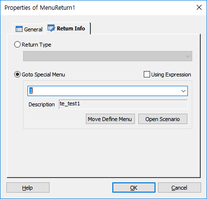

DefineMenu 에 정의된 메뉴를 MenuCall Item 호출에 의해서 이동한 MSFX(Menu Scenario File) 에서 호출 이전의 위치로 복귀 할 때 사용한다.
MSFX 에서만 가능하고, SSFX(Service Scenario File)에서 사용 되면, 에러 처리 되고, 수행하지 않는다.
ICON

PROPERTIES
 Return Info
Return Info

Return Type : 메뉴 트리내에서 이동 Type을 지정 합니다.
<Return Type 설명>
0 : 현재 메뉴 항목 계속 진행
1 : 상위 메뉴로의 이동
2 : 최상위 메뉴로 이동
3 : 메뉴 호출 종료(메뉴 호출을 종료하고, 호출 아이템 (MenuCall) 다음으로 복귀한다.
4 : 설정한 특정 메뉴로 이동(Goto Special Menu 선택 시)
Goto Special Menu : 콤보 박스에 지정한 특정 메뉴로 이동 합니다.
Using Expression Check Box : 지정할 특정 메뉴를 Expression(변수, 연산식) 으로 처리 합니다. Check하지 않으면 Value로 처리 합니다.
콤보박스 : 리스트에서 메뉴 ID 를 선택 할 수도 있고, 직접 변수나 표현식을 입력 할 수도 있습니다. Expression(표현식) 을 입력하고 사용할 경우는 Using Expression 을 체크해야 합니다.
Description : 콤보 박스에 메뉴 ID 를 지정하면 메뉴의 이름을 표시 합니다.
Move Define Menu Button : 콤보박스에 메뉴 ID 가 지정 되어 있고 Using Expression 가 False 면 버튼이 Enable 되며, 버튼을 누르면 Global.ssfx 파일이 오픈되고 DefineMenu Item 속성 창이 팝업 되고 해당 메뉴로 이동 합니다.
Open Scenario Button : 콤보박스에 메뉴 ID 가 지정 되어 있고, Using Expression 가 False 면 버튼이 Enable 되며, 버튼을 누르면 해당하는 메뉴 시나리오 파일이 오픈 됩니다.
RESULT
None.
RELATED